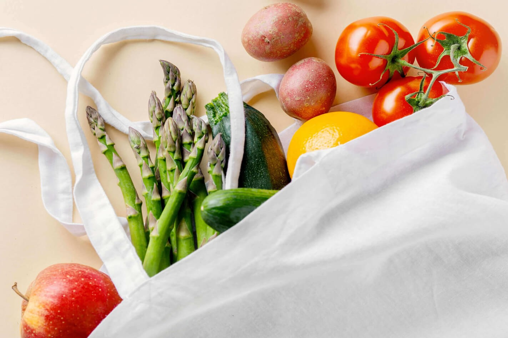
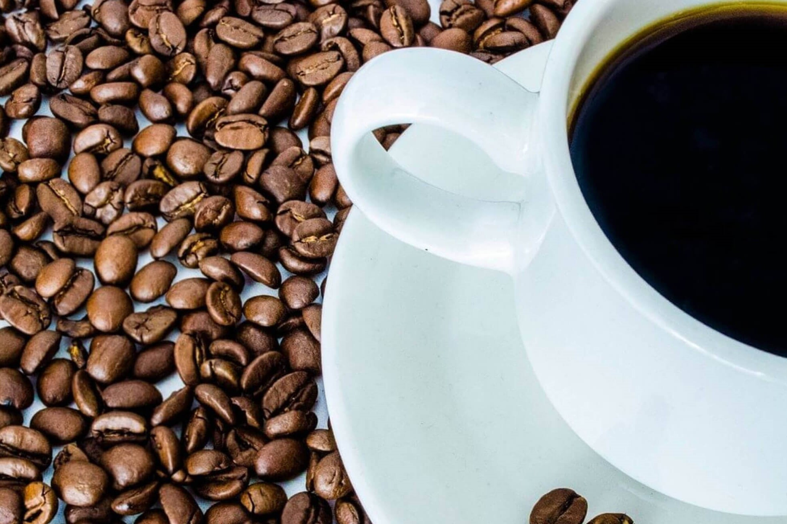

Clothes Made from Recycled Fabrics
Dresses made of natural materials are much safer for your skin and can be recycled. But an even better way
is to give your old jeans a new life. In the midst of a surge of second-hand stores gaining popularity, a
range of clothes are actually made from the clothes you purchased last year. There are places where you can
put your old clothes: Goodwill or the Salvation Army, or so on. In addition, if you carry an old textile,
different stores offer discounts. For example, taking your old clothes to H&M gives you a 15% discount,
while Levi's gives you a 20% coupon for a single item. You may also donate non-clothing textiles such as
sheets and towels.
Reusable Grocery Bags

Just many how plastic bags are still trapped in one of your kitchen drawers? Now, guess how many of them
will live on the planet long after your grand-grandchildren have grown up. Eco bags are typically made from
woven cotton fibers. They're extremely stress-resistant and robust, and since they're not translucent, no
one's going to figure out that you've purchased an extra Nutella can. And even if consumers do online
grocery shopping, they might still want to use a nice-looking reusable grocery bag to hold their daily
products. Try reminding your customers that they can receive a discount if they use a reusable bag to pick
up a purchased item.
Reusable Coffee Filters

There is no need to clarify that coffee is still popular. What a hectic life would it have been without
this cherished warm drink? Of course, in an eco-friendly, fashionable bamboo cup. But if you love it with
almond or soy milk, some kind of coffee beans have to be brewed. The cost and taste of the coffee depends on
the filter. Apart from common recyclable paper filters, the choices include metal filters, nylon filters and
even gold filters. Both appear to be balanced by a sustainable organic cotton filter. This one absorbs a bit
of oil, but it lets the acid run, and it's going to help you save a lot of money for years. Eco solutions
can also be used for computers. Reusable filters suit almost any coffee maker and are certainly worth buying
because a single filter can produce more than just one-off plastic. It's a little more expensive, but you
can make a coffee for a small coffee shop. And being easier to use, you're going to enjoy your morning
coffee faster than ever before.